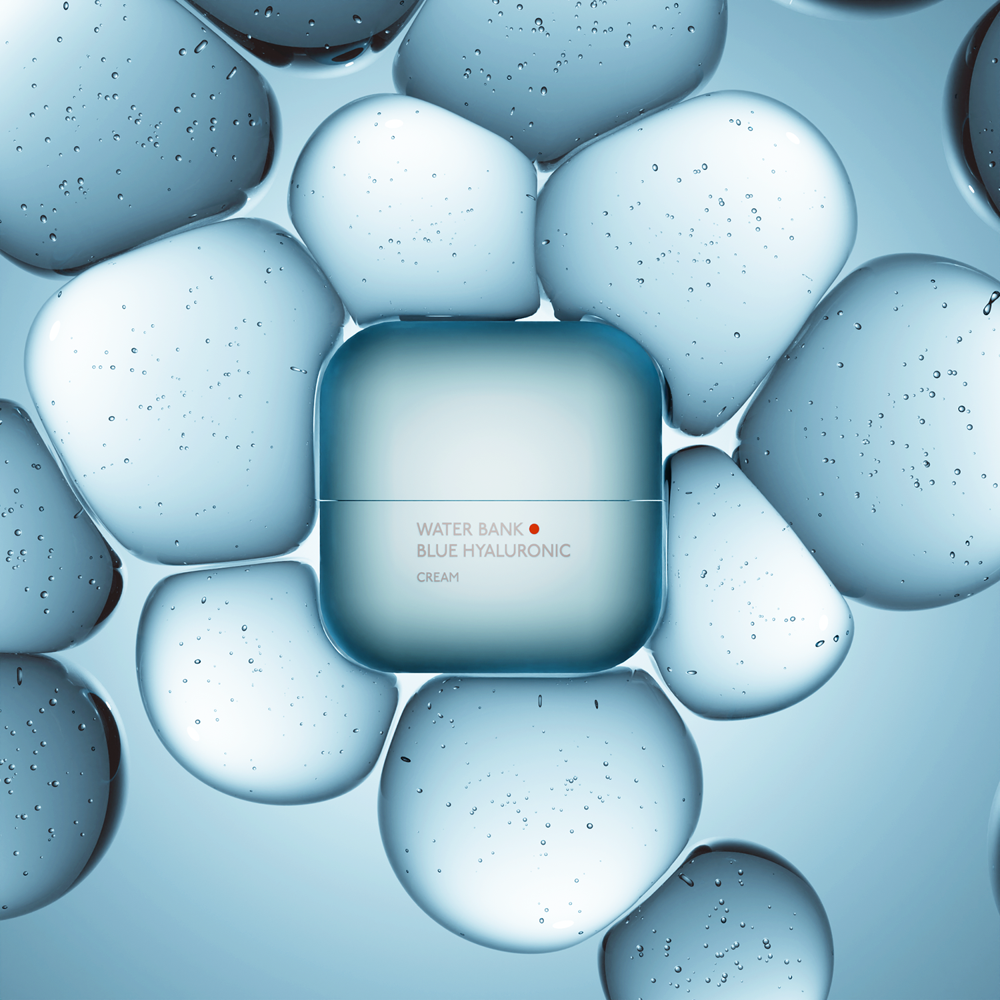
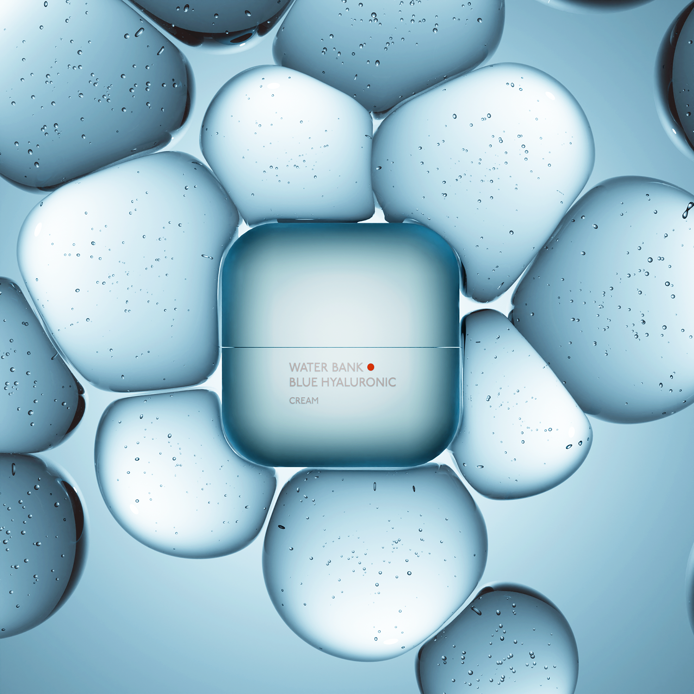

В быстро развивающемся мире электронной коммерции и маркетинга компании постоянно ищут инновационные способы представить свою продукцию наиболее привлекательным и захватывающим образом. Одним из таких революционных методов, получивших огромную популярность в последние годы, является 3D-рендеринг продуктов. Эта технология изменила способ демонстрации товаров и изменила правила игры в различных отраслях. Что такое 3D-рендеринг продуктов, как он создается и почему услуги 3D-рендеринга продуктов стали необходимостью для бизнеса?
3D-рендеринг товара — это процесс, который включает в себя создание реалистичных трехмерных изображений продуктов. Эти изображения могут быть неотличимы от реальных фотографий, что позволяет клиентам рассматривать товар и взаимодействовать с ним под разными углами и перспективами. В отличие от традиционной фотографии, 3D-рендеринг допускает бесконечную настройку, что делает его идеальным решением для презентации продуктов, которые, возможно, еще даже не существуют физически. Как создается 3D-рендеринг продукта?
Создание 3D-рендеринга/CGI фотографии продукта включает в себя несколько этапов, каждый из которых способствует получению окончательного фотореалистичного результата. Вот упрощенное описание процесса:
Результатом является высококачественный 3D-рендеринг продукта, который можно использовать в различных маркетинговых каналах, включая веб-сайты, платформы электронной коммерции, каталоги и рекламные материалы.

Увеличение продаж: 3D-рендеринг продуктов предоставляет потенциальным клиентам более детальное представление о ваших продуктах. Это повышает уверенность в совершении покупки, что приводит к увеличению продаж.
Экономически эффективно: создание физических прототипов или организация дорогостоящих фотосессий может занять много времени и средств. 3D-рендеринг продуктов предлагает более экономичную альтернативу.
Кастомизация: 3D-рендеринг позволяет легко настраивать изображения продуктов. Вы можете легко менять цвета, материалы или конфигурации, ориентируясь на различные рынки и предпочтения клиентов.
Конкурентное преимущество: Поскольку все больше компаний внедряют 3D-рендеринг продуктов, наличие высококачественных 3D-изображений выделяет вас среди конкурентов и показывает открытость инновациям и повышению качества обслуживания клиентов.
Гибкость: 3D-рендеринг не ограничен границами физической фотографии. Вы можете показывать товары в различных условиях и контекстах, адаптируя их к своему бренду и целевой аудитории.
В заключение, услуги CGI фотографии стали важнейшим инструментом для бизнеса, стремящегося процветать в эпоху цифровых технологий. Они предлагают беспрецедентные преимущества с точки зрения визуала и экономической эффективности. Инвестируя в 3D-рендеринг продуктов, вы можете улучшить имидж своего бренда, более эффективно привлекать клиентов и оставаться впереди в конкурентном мире электронной коммерции и маркетинга. Независимо от того, работаете ли вы в сфере моды, мебели, электроники или в любой другой отрасли, 3D-рендеринг продуктов меняет правила игры и может поднять вашу маркетинговую стратегию на новую высоту.


 
